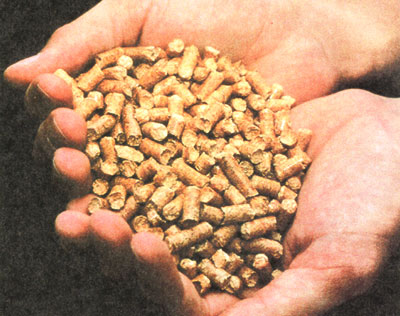
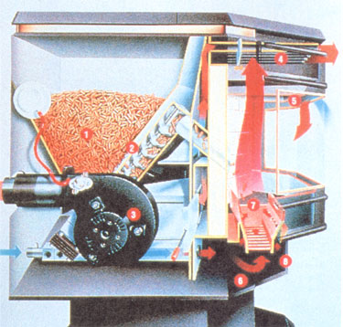
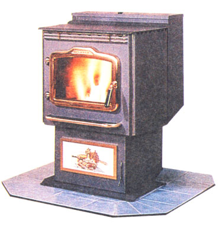
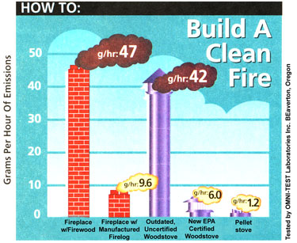
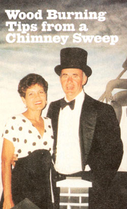

WOODSTOVE UPDATE
Pellet heat takes a bold leap forward.
As the woodstove industry r ides the last wave of Y2K hysteria into a land of record sales, manufacturers have already begun bracing themselves for the buying falloff that will inevitably come after we, and they, wake on January 1 to find the same world we left the evening before. While mindful of the fact that a burning fire will remain an irreplaceable source of comfort and aesthetic beauty to homeowners, manufacturers can't avoid the fact that millions of even clean-burning EPA woodstoves bought and used in the next century will stress cordwood availability and air quality to an extent that will, ultimately, make wood heat an economic anachronism.
More, and more, the answer seems to reside in the form of tiny wood pellets. MOTHER has featured pellet stoves since the first North American pellet plant opened in Brownsville, Oregon, nearly 30 years ago, but the newest generation of pellet appliances makes our first home-built models seem something less than quaint by comparison.
Made from sawdust and wood chips (waste materials from furniture making and other wood manufacturing processes), pellets are simply trees saved from the landfill. At an average price of $150 a ton, a $450 yearly investment in pellets will heat the average North American home. This places pellet heat, on a value
per-dollar scale, just slightly behind black gold (given current oil prices), substantially ahead of electric heat and increasingly on par with natural gas. Moreover, pellet fuel has not ridden the wave of market fluctuation the way oil and natural gas have. In 1990, a 40-pound bag of pellets cost $3, and we found the same price today at retail stores. Typically, pellet costs have not even kept pace with inflation, which actually means that your $3 bag is a much better buy now than it was ten years ago.
Apart from the environmental advantage of fewer wasted trees, pellets have an ash content low enough to make them burn up to 12 times more cleanly than the most efficient EPA-certified cordwood stoves. Furthermore, pellet stoves emit fewer allergens into the home, are automated to burn for exceptionally long periods of time irk, then thermostatically controllable (unlike most cordwood stoves), and keep your clothes and floors clear of the dirt tracked in from a trip to the woodpile.
The price of all this convenience is, however, seen in your monthly electricity bill. Nearly all the 600,000 pellet stoves operating in North America require current to run the heat fans and pellet feeders. This would represent only a conditional annoyance were it not for the fact that just over 50% of pellet stove owners use the appliance as their primary source of heat. Throw in an ice storm of the kind that left huge portions of Vermont, New Hampshire and southeastern Canada without power last winter and you have invited a potentially home-abandoning situation. As a result, the pellet stove industry has not seen anything like the robust, Y2K-fear-driven conventional woodstove sales. "Eighty percent of the people who look at a pellet stove are worried about its grid dependency," reports Mark Drisdelle of Dell Point Technologies Inc., a pellet stove manufacturer out of Montreal, Canada. "They are more than a little hesitant to make a $2,000 investment in a primary source of heat if it isn't flexible enough to function without the grid if necessary."
This year marked the first industry-wide acknowledgement of that fact, resulting in seven new designs which we examined at the Hearth Products Expo in Phoenix (of all places!). Innovations in bum cleanliness and major strides toward grid-independence were shocking to those of us who were accustomed to a glacial pace in woodstove development. "We haven't seen this level of product roll-out in years," offered Averill Cook, president of the Pellet Fuels Institute. "We're thrilled that manufacturers are responding."
The most innovative model we examined was Dell's DC 2000. Though at first struck dumb by the unit's price tag of $2,495, we softened a bit when we found that an overall efficiency of over 80% (compared to an industry standard of 50% to 60%) allowed tire unit to kick out 29,000 of its rated 35,000 BTU's. That's enough to heat a 2,500-square-foot home. Even more important from a consumer concern standpoint, the Dell model is grid-independent. As waste heat travels up the exhaust vent, it passes through a breadbox sized unit that uses conductive metals reacting with the heat to produce electricity for the stove. The generator charges a battery designed to both cold-start the stove and keep the motors running during operation. Dell plans to sell the unit as an add-on kit for older stoves beginning next February. It will sell for about $350.
No advance in power delivery systems means much if the stove has to run on 100-volt AC house current rather than 12-volt DC. The vast majority of pellet stove makers continue to use the former system... and we can understand why. AC motors are cheaper and since the stoves they power are designed to plug into a home outlet, there's been no real urgent need to complicate matters. The trouble begins, however, when the lights go out. Finding a secondary source of AC is an expensive and incredibly wasteful proposition (think $3,000 for a generator), whereas 12-v DC current can come from a car battery, solar panel or small wind turbine. Thelin Co., Dell Point and Reliant Stoves are currently the only manufacturers who produce 12-v pellet models, and though pricey, they are really the only options for those purists who regard grid-dependent units as either annoying or downright dangerous.
The EPA, for its part, is poised to give the pellet business a tremendous shot in the arm. By 2003, the Agency will mandate that the waste smoke from wood burning stoves contain particles no larger than 2.5 microns. This will represent a 70% drop from the current level... a mark that conventional woodstoves will find incredibly difficult (and expensive) to meet. Currently, all pellet stoves meet this mark-a fact that will help keep their costs just above reasonable but below outrageous. The clean burns most of the stoves feature is a simple by-product of the fuel. Pellets are deliberately manufactured without ash and soot-producing contents, and are bound together by natural linen. Cordwood has far too many environmental influences acting upon it in the growing stage to ever reach a form that will be as predictably clean as pellet fuel, and the amount of research and development that cordwood stove makers will require to meet EPA requirements could price many of them out of the marketplace.
If the pellet industry is going to succeed in promoting this renewable form of biomass energy, they must finally address the issue of convenience. Many homeowners choose pellet heat because they cannot lug 40-pound armfuls of cordwood from the shed. Yet will they be better able to carry a 40-pound bag of pellets from the car trunk? And weekly trips to the garden supply center or homeowners store to buy a portion of the three tons of winter fuel you will need (150 bags) is a considerable waste of time, money and gasoline. Oil, propane and natural gas, all distributed by Multinational corporations, are just a phone call away from virtually all of the 100 million households in the United States. Because the Pellet Fuels Institute wants homeowners to have the same access to renewable fuels, it has launched a pilot program, in tandem with the Department of Energy and scheduled to begin next year, to design a distribution network that would service 30 test homes near a selected pellet manufacturer. Metering systems will be installed on delivery trucks to provide reliable accounting and measurable efficiency. Over the 24 months of the field test, determinations will be made as to the feasibility of a national network (similar networks exist in the U.K.. Sweden and Other Countries).
Such a system would not only add to customer convenience, it would save and resources currently required to package and distribute pellets front the 70 North American manufacturers to retail outlets. When the system truly becomes turnkey, there will begin a quiet revolution in energy consumption the first nationally distributed renewable energy Source ... ever.
It was a cold night in 1982 when Bob Kaufman opened an issue of MEN and spotted an article on chimney cleaning that would change his life. Spurred on by the dream of self-employment, Bob quit his full-time job and, along with his wife Deb, launched Chimney Solutions, a sweeping and restoration business in MOTHER's hometown of Hendersonville, North Carolina. Seventeen years later, they're still sweeping and reading. Here, the Kaufmans share some wood-burning safety tips for the coming winter.
The National Fire Protection Agency recommends that your venting system be inspected annually by a certified chimney sweep.
• Be sure your home is equipped with working smoke alarms, as well as a carbon monoxide detector.
• Every floor of your home should have an easily accessible five-pound class ABC fire extinguisher in working order.
• All members of the family should know what to do in case of a house fire. Families with children should practice fire drills at home during the day and at night.
• Burn only dry, seasoned wood (six to 12 months drying time recommended).
• Make sure you have proper floor protection in front of wood burning appliances, both fireplaces and wood stoves.
• Observe proper installation of woodstoves. Most fires occur where connecting pipes pass through walls into the chimney.
• Do not start fires with unapproved fire starters such as kerosene, fuel oil or gasoline.
• Do not leave children unattended while solid fuel is being burned.
• Do not remove ashes from appliances in anything but a metal container and do not set the container with hot ashes on any combustible material. Coals can stay "alive" for several days when buried in ashes.
• If you are burning cords of wood, inspect your chimney every six weeks during the burning season and clean as necessary.
-Bob and Deb Kaufman
|
 The mechanics of a pellet stove, in this case a Brems Eastman freestanding model: the hopper(1), which can hold enough pellets for several days; screw auger (2), which feeds pellets to the fire; exhaust system (3), heat vent (4), firebox enclosure (5), ash pan (6), fire grate (7), and draw vent (8). |
 Harman Stove Co.'s pellet stove model P61 |
 Build a Clean Fire, Pellet-Style: Pellet stoves offer by far the cleanest way to burn wood, emitting an average of 1.2 particulate grams per hour-well below the EPA limit of 7.5 grams. And with several new models offering grid-independence, plus a national bulk distribution system in the works, even the long bemoaned""downsides"" to pellets are starting to look up. |
|
 |
 |
|